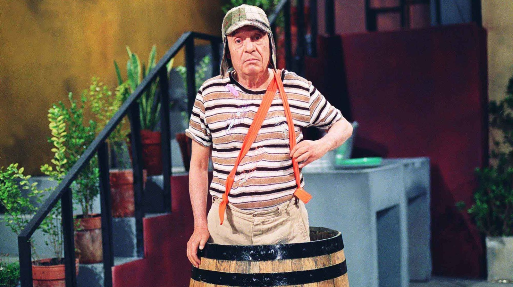
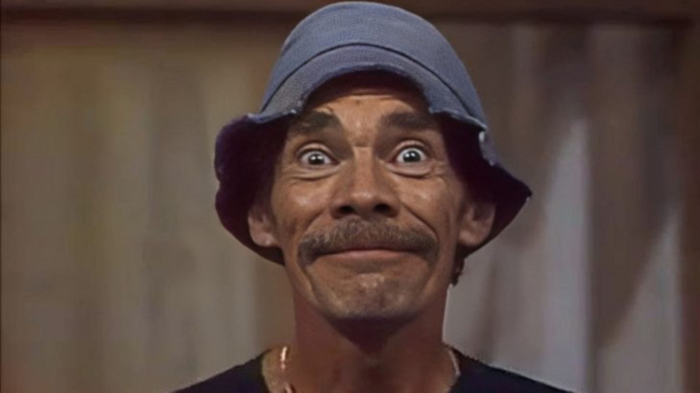
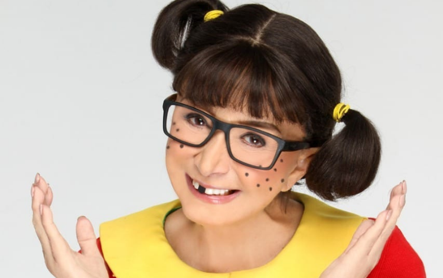
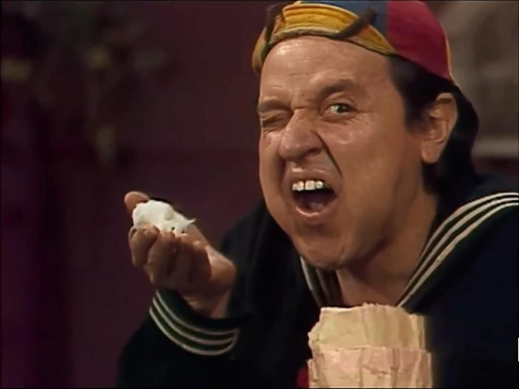
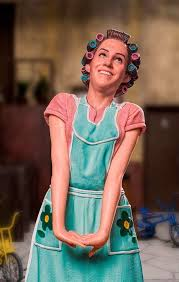
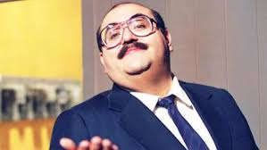

El Chavo del 8
El Chavo del 8 es una serie de comedia mexicana sobre Chavo, un niño huérfano que vive en un barril en una vecindad. A través de situaciones cómicas, interactúa con personajes como Don Ramón y Quico. Fue muy exitosa en México y otros países de América Latina.
Entrevistas
Influência no Brasil
La influencia de "El Chavo" en Brasil es tan grande que se han realizado varios homenajes y eventos en su honor. En 2014, por ejemplo, cuando Roberto Gómez Bolaños, creador e intérprete de El Chavo, falleció, miles de brasileños expresaron su pesar y gratitud en redes sociales y en eventos públicos. La serie sigue siendo transmitida por el SBT, manteniendo viva la memoria de los personajes que marcaron la infancia y la vida de muchos brasileños.


Influência no México
A pesar de las críticas, "El Chavo" dejó un legado duradero en México. La serie es recordada por su capacidad de entretener y, al mismo tiempo, ofrecer un reflejo de la sociedad mexicana. Los personajes y episodios siguen siendo referenciados en la cultura popular, y el programa mantiene una base de fans leales hasta hoy.
Personagens
Chaves
El Chavo es un niño huérfano, muy simple y muy ingenuo, pero a pesar de tantas dificultades y de una vida difícil, El Chavo mantiene su espíritu optimista y una imaginación fértil, creando aventuras y juegos para distraerse y divertir a sus otros amigos de la vecindad.
Seu Madruga
Don Ramón es un hombre perezoso y constantemente endeudado que siempre dice que va a pagar el alquiler, pero nunca lo paga. A pesar de eso, es un personaje de gran corazón.
Chiquinha
Chiquinha es un personaje lleno de personalidad, inteligente, graciosa, manipuladora y muy creativa. Siempre está inventando historias y haciendo planes para salir bien de las situaciones.
Quico
Quico es consentido y le encanta presumir, especialmente con sus juguetes caros que le da Doña Florinda. Es un personaje divertido, pero también muy sensible. Es decir, muchas veces actúa de forma arrogante, pero en el fondo solo quiere atención y cariño de todos.
Dona Florinda
Doña Florinda es vanidosa y siempre se comporta como si fuera superior a sus vecinos. Tiene un temperamento fuerte y siempre está peleando con Don Ramón, el padre de Chiquinha.
Senhor Barriga
El Señor Barriga es el dueño de la vecindad y siempre aparece para cobrar el alquiler de Don Ramón (que siempre encuentra una forma de no pagar). A pesar de ser persistente, es un personaje muy bondadoso y paciente.